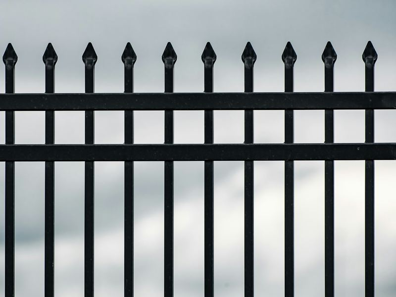
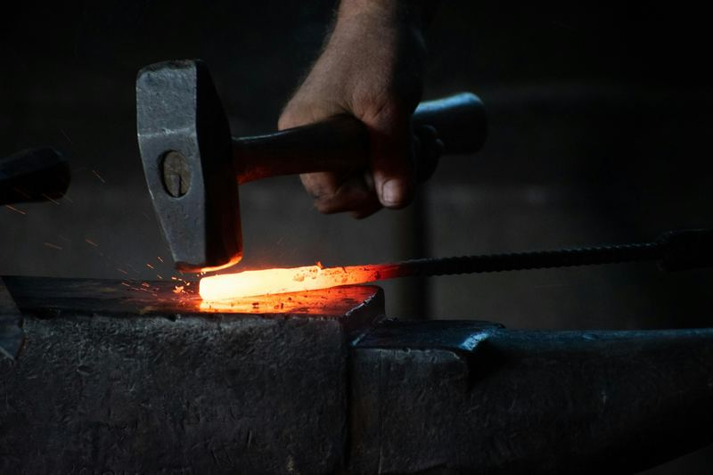
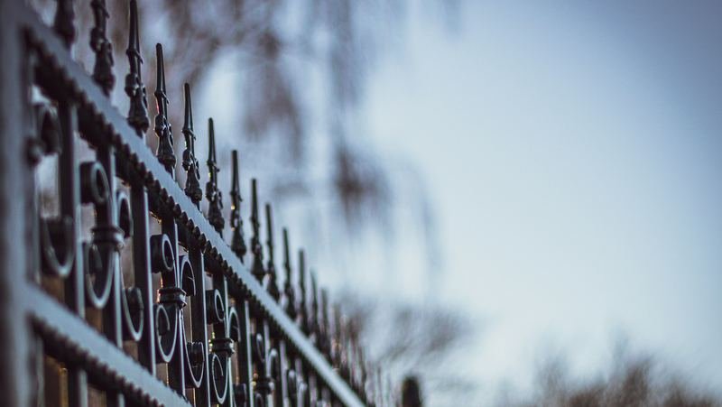
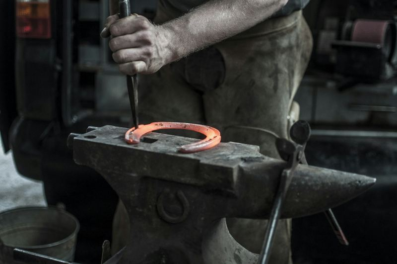
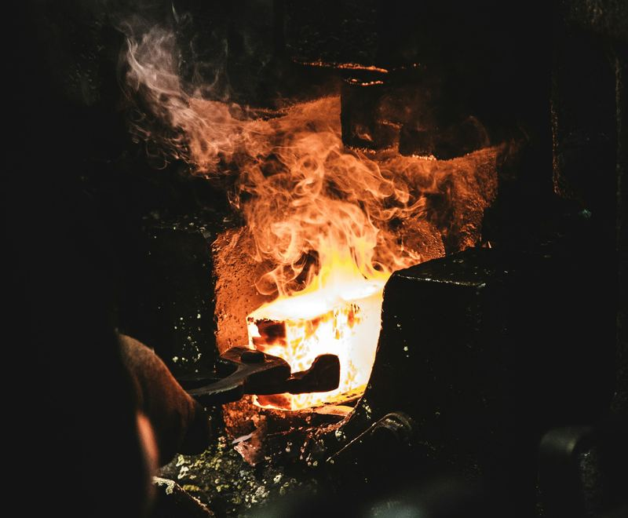

Ploty a brány
Ručně kované, bezúdržbové i klasické. Včetně demontáže starého plotu.
Lukáš Manderla z Čeladné. Vyrábím a montuji ručně kované, bezúdržbové i klasické ploty a brány, mříže do oken, balkonová zábradlí a kované dekorace do interiéru. Starý plot rovnou odstraním.

Zadejte délku a vyberte styl. Uvidíte, kolik polí a sloupků plot potřebuje, a rozměry nám pošlete s poptávkou.
Od plotu kolem zahrady po kovanou dekoraci do obýváku.

Ručně kované, bezúdržbové i klasické. Včetně demontáže starého plotu.

Mříže do oken a balkonová zábradlí.

Kované dekorace do interiéru, svícny, háčky, ozdoby.

Ručně kované prvky nejsou z katalogu. Každý oblouk a hrot vzniká na kovadlině, a proto plot sedí přesně k Vašemu domu.